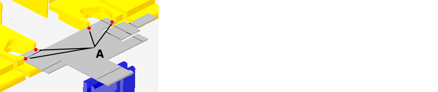

En esta caja de diálogo puede cambiarse la posición de los topes, o ponerse de nuevo, para el proceso de doblado seleccionado. Las combinaciones de opciones de tope no válidas se marcan con un símbolo de error.
Básicamente hay dos tipos de talones de tope:
- Talón de tope estándar
- Talón de tope para topes angulares
Este talón de tope no puede utilizarse para topes angulares. En la mayor parte de las máquinas puede combinarse con el talón de tope para topes angulares.
Fig.: Representación básica del talón de tope estándar

Puede utilizarse para todos los topes.
Fig.: Representación básica del talón de tope para topes angulares

Info: Las siguientes explicaciones se refieren al talón de tope para topes angulares que es el que se utiliza en la mayor parte de los casos. Todas las descripciones son también de aplicación para el talón de tope estándar, exceptuando el tope angular de esquina.
Opciones
Con esta opción se posiciona o estaciona el correspondiente brazo de tope.
Estando activada la opción Estacionado se desactivan todas las demás opciones del talón de tope excepto la opción borde de tope.
NOTE: Si estando activada la opción Estacionado se selecciona otro borde de tope para este talón de tope, entonces se desactiva la opción Estacionado y el talón de tope se pone en el borde de tope seleccionado.
Esta opción hace que el talón de tope engatille en el vértice correspondiente del borde de tope. Para fijar la pieza con precisión se necesitan 4 puntos de tope (A) como mínimo.

Fig.: Puntos de tope al sujetar los vértices
NOTE: Esta opción sólo está disponible si se ha montado un talón de tope para topes angulares.
Seleccione esta opción si hay bordes redondos o topes angulares.
En el caso de que en la posición actual del talón de tope no sea posible poner un tope angular entonces puede intentarse si cambiando el talón de tope en los brazos de tope se consigue realizar el tope.
Con el botón Asignar se determina el borde en el que deba ponerse el tope. Todos los bordes de tope posibles se marcan con una línea negra.
Info: Pulsando el botón Asignar se amplía el zoom sobre el borde de tope marcado en rojo (A).
Fig.: Asignar borde de tope

Asignar topes a un borde
- Seleccionar el botón Asignar.
- Pulsar sobre el borde de tope al que deban asignarse los topes.
- Determinar en el diálogo Adoptar las posiciones para las que deba adoptarse el tope
Tip: En el caso de que no sea posible poner un punto de tope en el talón de tope, seleccionar con la opción Punto de referencia otro punto en el talón de tope.
Con esta opción se determina la posición del talón de tope en la que deba ponerse el tope de borde de la pieza a doblar. De forma estándar se montan en cada brazo de tope un talón de tope recto y otro para topes angulares.
El punto de referencia puede seleccionarse en el diálogo Parámetros o a través del botón Modificar.
- Modificar
El punto de referencia se selecciona con el número de referencia sobre el talón de tope. Se aplica la función de zoom sobre el talón de tope con la numeración de los puntos de referencia.
Tope angular (A)
| 0/4 | La pieza a doblar está sobre el talón de tope contra el que puede hacer tope. El punto de tope puede utilizarse también para un tope angular. |
| 1/2 | La pieza a doblar sólo puede ponerse a tope. En el caso de que se seleccione el punto de tope (2) puede colocarse el talón de tope sobre la herramienta inferior cuando se tengan lados de doblado cortos. |
| 3 | La pieza a doblar está sobre el brazo de tope y hace tope contra el perno. |
| 5/6 | La pieza a doblar sólo puede ponerse a tope. En el caso de que se seleccione el punto de tope (6) puede colocarse el talón de tope sobre la herramienta inferior cuando se tengan lados de doblado cortos. |
Tope recto (B)
| 7 | La pieza a doblar está sobre el talón de tope contra el que puede hacer tope. |
| 8/9 | La pieza a doblar sólo puede ponerse a tope. En el caso de que se seleccione el punto de tope (9) puede colocarse el talón de tope sobre la herramienta inferior cuando se tengan lados de doblado cortos. |
Fig.: Niveles de referencia en el talón de tope

Con esta opción puede conectarse y desconectarse el sensor en el talón de tope. La opción sólo está activa si el talón de tope dispone de sensor.
El sensor detecta si la chapa se apoya correctamente en el talón de tope. En el caso de que la chapa no se apoye correctamente en el talón de tope estando el sensor conectado entonces no puede ejecutarse el proceso de doblado subsiguiente.
Con esta opción se determina la medida con la que el talón de tope retrocede del borde de tope antes de hacerse la dobladura. Los retrocesos se utilizan para evitar colisiones entre la pieza a doblar y los talones de tope durante el proceso de doblado.
Es necesario poner los retrocesos cuando haya que poner a tope con el talón de tope una pieza ya doblada (1) cuyo lado mire hacia abajo (B).
Fig.: Utilización de un retroceso (A) en un tope con un lado doblado hacia abajo

Glosario:
| A | Distancia mínima del retroceso del talón de tope |
| B | Recorrido entre punto final y lado |
| 1 | Borde de tope Es el borde de la pieza a doblar que se empuja contra un punto de tope de talón de tope para obtener una posición exacta. |
| 2 | Punto de giro del lado (B) durante el doblado |
NOTE: El valor mínimo de retroceso en el modo de asignación automática es de 10 mm.
Con esta opción se determina la posición del talón de tope en el borde de tope de la pieza a doblar. El talón de tope puede posicionarse de dos formas.
- Haciendo la entrada de la posición en el campo Posición Z.
- Desplazándolo en la vista 3D.
Botones
- Confirmar conflictos
- Advertencias
- Error
Pueden confirmarse advertencias y errores sobre proceso, doblado, estación o pieza.
Con esta función se confirma el aviso del proceso de doblado elegido. El aviso se muestra como símbolo # detrás de la denominación de herramienta.
Tip: Utilice esa función para avisos que puedan pasarse por alto en el proceso de doblado seleccionado. Con la confirmación se le comunica al sistema que puede utilizarse la herramienta para el proceso de doblado.
Con esta función pueden confirmarse errores de herramientas asignadas.
Info: Esta función sólo está activa si puede confirmarse el error pendiente.